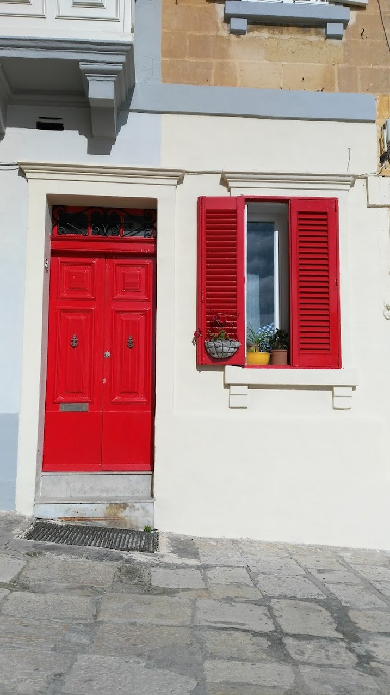
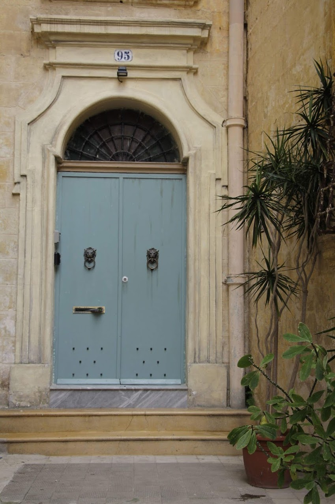
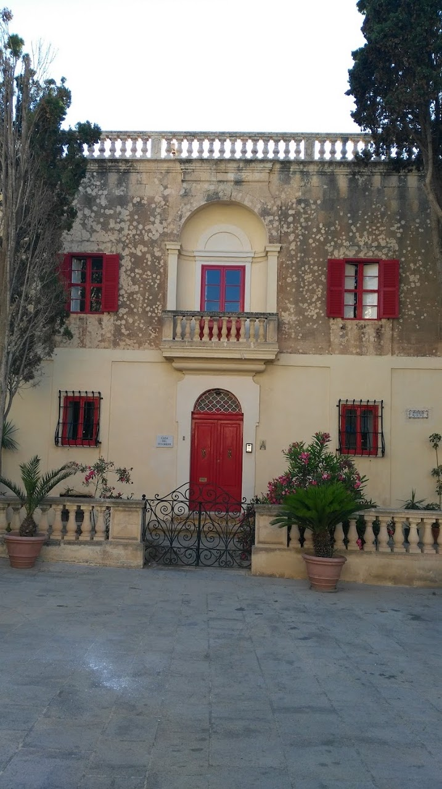
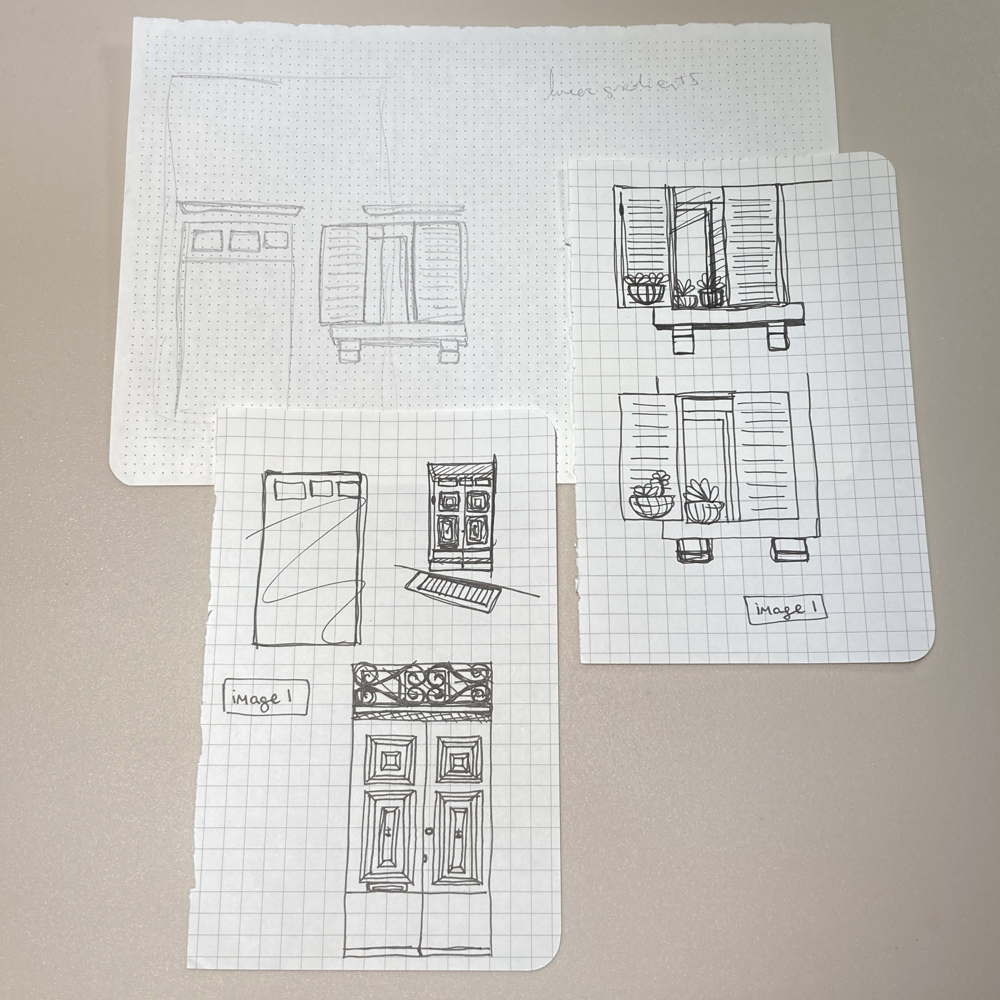
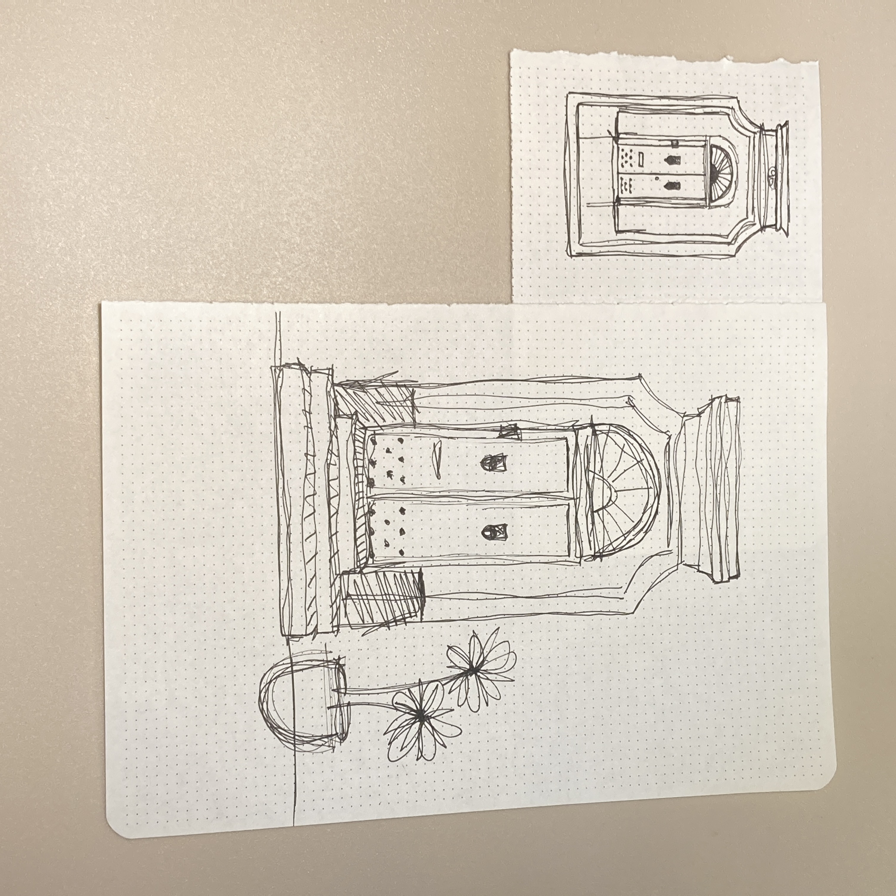
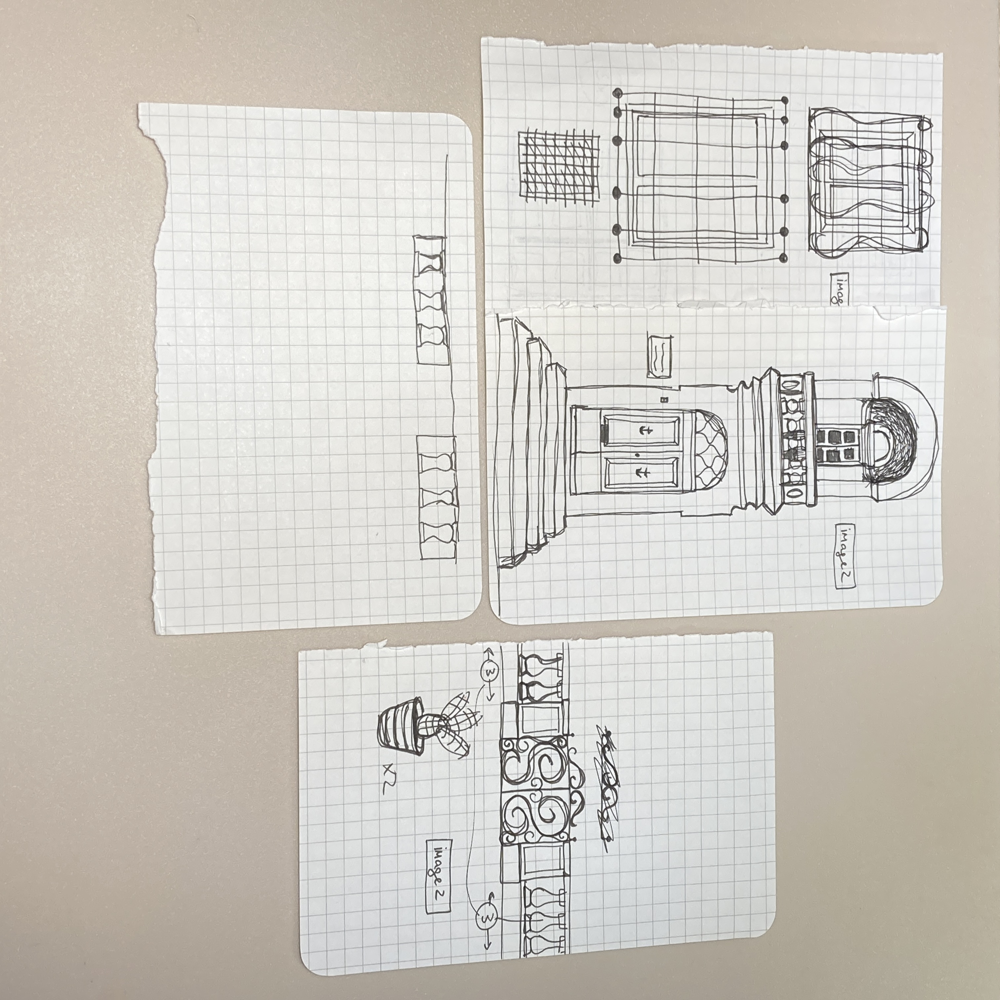
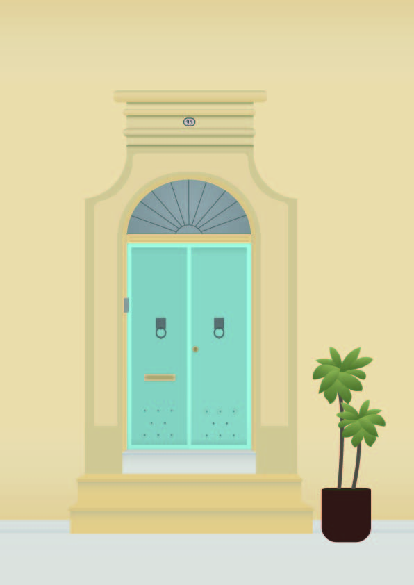

This assignment was one of my favourites because it introduced us to Adobe Illustrator, a software which I was always interested in but never got the chance to learn. Thus with this assignment I was able to become more familiar with it, which I am now very grateful for because and I am currently using it for my other assignments.